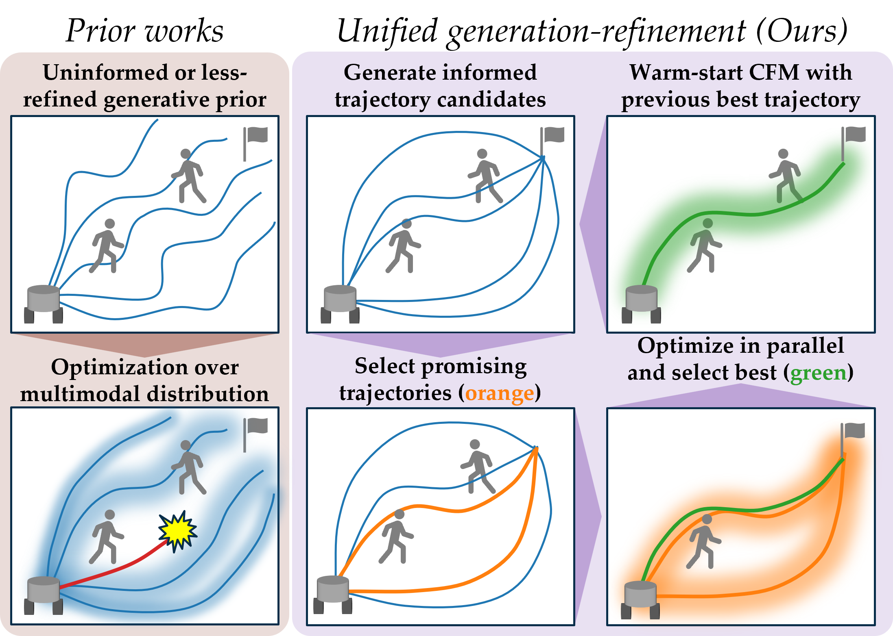
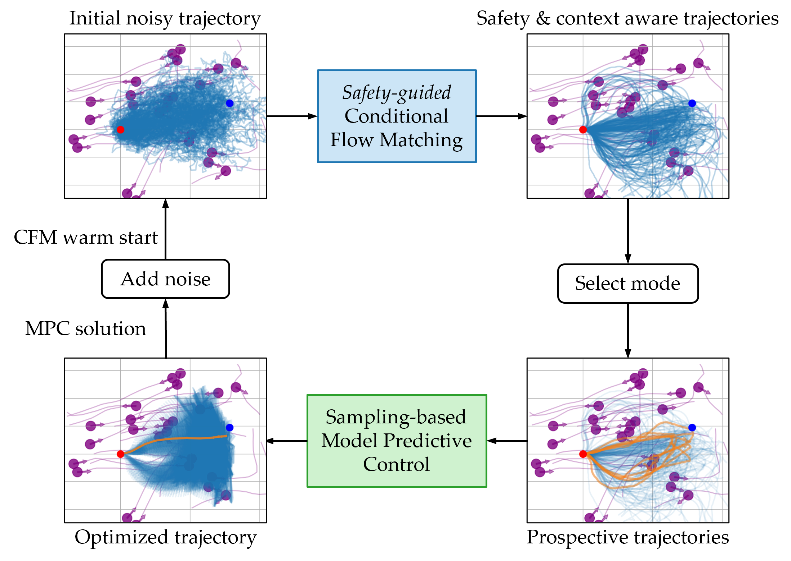
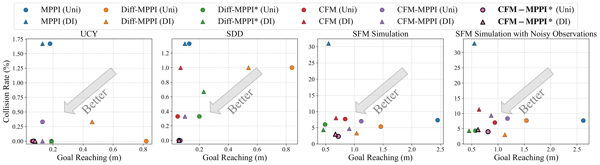
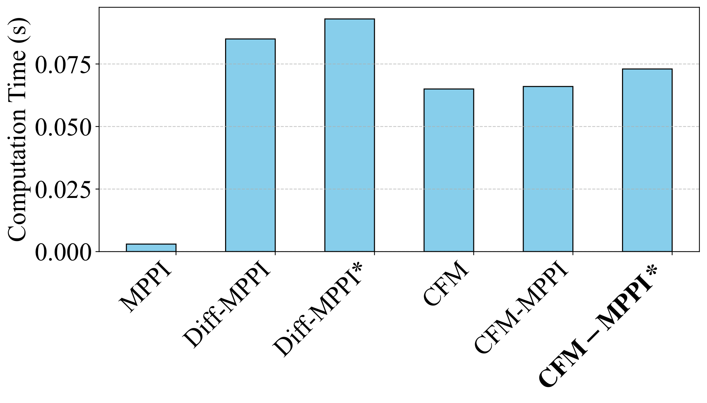

Robust robot planning in dynamic, human-centric environments remains a core challenge due to the need to handle multimodal uncertainty, adapt in real-time, and maintain safety. Optimization-based planners offer explicit constraint handling but performance relies on initialization quality. Learning-based planners better capture multimodal possible solutions but struggle to enforce constraints such as safety. In this paper, we introduce a unified generation-refinement framework bridging learning and optimization with a novel reward-guided conditional flow matching (CFM) model and model predictive path integral (MPPI) control. Our key innovation is in the incorporation of a bidirectional information exchange: samples from a reward-guided CFM model provide informed priors for MPPI refinement, while the optimal trajectory from MPPI warm-starts the next CFM generation. Using autonomous social navigation as a motivating application, we demonstrate that our approach can flexibly adapt to dynamic environments, enforcing safety compliance in real-time.

Overview of the proposed unified planning framework for dynamic environments: At each planning step, our conditional flow matching (CFM) model generates context-aware and multimodal trajectory candidates guided by a reward function. Promising candidates are selected, then refined, and the best trajectory is selected and executed. The optimal trajectory warm-starts the next CFM generation for the next planning step.

A safety-guided conditional flow matching (CFM) model generates diverse trajectories as priors for model predictive control (MPC), which in turn warm-starts the next CFM sampling step — creating a bidirectional feedback loop that improves efficiency and performance.

Quantitative performance comparison of goal reaching versus collision rate across various datasets and simulated environments. CFM-MPPI* (mode-selective) achieves the balance of safety and task performance across all environments.

Comparison of computation time across different methods. CFM generates control sequences in less than 0.1 seconds.
@inproceedings{mizuta2026cfmmppi,
title={Unified Generation-Refinement Planning: Bridging Guided Flow Matching and Sampling-Based MPC for Social Navigation},
author={Mizuta, Kazuki and Leung, Karen},
booktitle={IEEE International Conference on Robotics and Automation (ICRA)},
year={2026}
}